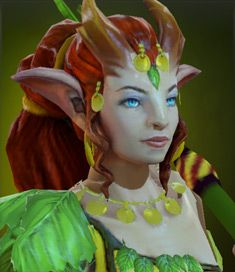

Dota Manual
Dota добра

Enchantress

Біографія
Аюшта на перший погляд видається невинною та безтурботною істотою, але це не так. Вона відчуває всі страждання природи на собі. Кожне зрубане дерево, кожна зламана гілка — усе це змушує Аюшту страждати. Їй стало важко знайти ліс, у якому вона могла б спокійно існувати. Там, де йде війна, ліс використовується для будівництва кораблів та військової техніки, а в мирних місцях його рубають для будівель і палива. Аюшта чує крики всіх маленьких істот, які не можуть знайти сховку, яким потрібна зелень, щоб існувати. Чарівниця збирає історії в усіх лісах, у яких буває, і несе їх світові, вважаючи, що хороший настрій та віра у світле майбутнє вже самі по собі потужні чари, що здатні озеленити світ.
| 17 + 1.7 | |||||
| 19 + 1.8 | |||||
| 22 + 3.6 | |||||
| 23-33 | |||||
| 1 | |||||
| 320 | |||||
| Рівень | 1 | 15 | 25 | 30 | |
|---|---|---|---|---|---|
| Пошкодження | 45-55 | 95-105 | 131-141 | 149-159 | |
| Здоров'я | 540 | 1000 | 1340 | 1520 | |
| Мана | 339 | 939 | 1371 | 1587 | |
| Захист | 4.04 | 8.07 | 10.95 | 12.39 | |
| Час атаки | 1.43 | 1.18 | 1.05 | 0.99 | |
| Атак в секунду | 0.7 | 0.85 | 0.95 | 1.01 | |
| Дальність огляду | 1800 / 800 | ||||
| Дальність атаки | 575 (дальній бій) | ||||
| Базовий реген | 0 | ||||
| Базовый манареген | 0 | ||||
| Дерево навичок | Рівень | Навик | |||
| 25 | +20 к лечению от Nature's Attendants | +6.5% к урону от Impetus | |||
| 20 | Enchant действует на древних крипов | -65 скорости атаки врагов от Untouchable | |||
| 15 | +6 к числу светлячков от Nature's Attendants | +40 к урону | |||
| 10 | +15 к скорости передвижения | +12% к сопротивлению магии | |||